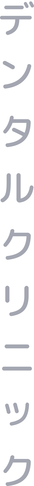

標準咬合中，上顎門牙與下顎門牙的垂直覆蓋率約為1~2mm。當上顎門牙和下顎門牙沒有垂直覆蓋、中間有縫隙時，會導致上下門牙無法切咬食物、嘴巴無法閉緊、說話漏風等問題。


矯正が必要な理由
 提高咀嚼能力、恢復口腔正常功能。
提高咀嚼能力、恢復口腔正常功能。
 改變牙齒排列。
改變牙齒排列。
 改善臉型。
改善臉型。
矯正プロセス
矯正流程
Step1.矯正諮詢
確認患者前來就診的原因，了解病患最在意的問題，及預期矯正後能達到怎樣的改變，同時也在諮詢過程中確認患者的生活習慣等等，根據諮詢過程中獲得的資訊提供適合的矯正方式供患者選擇。

Step2.資料蒐集
拍攝口內外照片、全口X光片、口內掃描等等，讓醫師有充足的資訊分析患者的口內狀況，診斷問題並制定治療計畫，例如：是否需要拔牙、打骨釘、或是是否需要合併其他專科治療，之後再根據蒐集到的資訊與患者意願確定矯正方式。

Step3.矯正前的牙科治療
若患者有其餘牙齒的問題，例如需要補牙、根管治療、治療牙周炎等等，都會建議在牙齒矯正前完成治療，讓口腔在健康的狀態下進行矯正治療。

Step4.開始矯正
根據患者的療程及咬合狀況評估是否一次性裝置矯正器，或是分次裝置完成。裝置完成矯正器後，根據患者齒列狀況會需要一年甚至兩年的時間讓矯正器慢慢將牙齒拉至正確的咬合位置。

Step5.矯正回診
根據選擇的矯正方式以及患者本身情況，通常每隔2至8週便會需要回診，更換矯正線、橡皮筋，或是領取新的隱形牙套。不管是何種矯正方式，定期回診讓醫師確認牙齒移動狀況並調整矯正器是非常重要的。
ハプニング
齒列不齊的幾種情況標準咬合中，上顎門牙與下顎門牙的垂直覆蓋率約為1~2mm。當上顎門牙和下顎門牙沒有垂直覆蓋、中間有縫隙時，會導致上下門牙無法切咬食物、嘴巴無法閉緊、說話漏風等問題。
正常上顎牙齒咬合覆蓋下顎牙齒1~2mm左右，深咬的咬合則是上顎牙齒覆蓋下顎牙齒2mm以上，形成咬合過深看不到下顎牙齒，導致下門牙咬到上顎牙肉及影響咬合、牙周健康與美麗。
前排上顎牙齒特別凸出，無法跟下顎牙齒正確咬合。大部分暴牙患者皆能以矯正進行治療，較為嚴重的暴牙患者則要配合口腔外科手術才能到理想之外觀與咬合功能。
與一般正常牙齒咬合相反，即下顎前牙咬到上顎前牙的外面，俗稱月亮臉、戽斗，容易有臉型較凹、下巴較長的視覺觀感；除了美觀問題外，也會造成咀嚼、發音等功能障礙。
牙弓中的牙齒不是排列成自然美觀的弧線，而是向前突出或向內凹入，甚至互相重疊，造成原因是牙弓與牙齒大小無法配合，空間不夠導致牙齒呈現重疊擁擠的狀態。
牙齒與牙齒之間有很大的縫隙，多數是牙齒個頭過小，而容納牙齒的牙弓過大，或因長期嵌塞食物，造成牙間隙增大。長期患有牙周病的病患在不正常咬合狀態下可能出現前牙縫隙。
矯正の方法
矯正的方法 1.功能性矯正：
MRC功能性矯正器主要是矯正不良的口腔習慣(包含口呼吸、不正確的舌位及不正確的吞嚥方式)，進而改善臉部的發育及牙齒排列，配合訓練呼吸及舌頭的運動減少矯正治療的複雜度及提高穩定度。
2.固定式矯正器矯正：
3.隱形矯正器：
隱形矯正器是將牙齒透過數位掃瞄後經過大數據分析，規劃好牙齒移動的方向與距離，並製作出專屬的透明矯正牙托輔助牙齒的移動，以達到矯正的效果。隱適美的透明牙托配戴方便也可隨時取下，不僅清潔容易，且不會有黏膜刺傷的問題，但其最大的缺點是矯正的時間較長而且費用較高。適合想做牙齒矯正但又愛美不想配戴金屬矯正器的患者。
4.正顎手術矯正：
正顎手術主要是為了修正臉部及顎部構造或發育所造成的咬合問題。患者會因臉部骨骼問題導致咬合不正、臉型不佳、顳顎關節功能障礙等狀況，若是無法以傳統齒顎矯正的方式恢復正常咬合，則需以手術的方法矯正上下顎骨骼及牙齒咬合不正常的狀況。
副作用與注意事項
副作用と注意事項矯正器會造成患者牙齒清潔不易，使菜渣和牙垢更容易沉積，從而增加蛀牙和牙周病的風險。
牙齒矯正治療是移動牙齒的治療，因此容易發生牙齒根部吸收。如果對牙齒的矯正力度適當便不需要擔心。
由於牙齒運動存在個體差異，病患的治療期皆各不相同。此外，在牙齒矯正治療中，需要請患者配合矯正器的使用和定期就診。
完成牙齒矯正後，如果未按照指示使用維持器，則牙齒排列可能發生回退。
慢性牙周炎
有多顆植牙
有精神疾患
1.那些情況不適合矯正？
如果你有慢性牙周炎導致牙槽骨已嚴重吸收、已有多顆種植牙或者有精神疾患的患者不建議矯正。其餘情況是否合適還是需要去找專科醫師檢查後才能確認。
由專業矯正
醫師評估
2.矯正一定要拔牙嗎？
需不需要拔牙依每個患者的牙齒狀況不同而異，也有不需要拔牙的狀況，例如牙齒縫隙較大較鬆，或是門齒沒有前凸的狀況等，有時能透過臼齒後移及牙齒修磨、將齒列往前或往兩側擴張，就可使牙齒得到足夠的空間，重新排列整齊。詳細情況還需經由專業矯正醫師評估，若無上述條件，拔牙也無需過度緊張，拔牙只是為了取得足夠的牙弓空間，其空隙在矯正後會全部合攏。
一般而言
2-3年
3.矯正需要多久？
由於每個人牙齒的狀況不同，牙齒移動的速度也不同，矯正所需的時間也因每個人的年齡及身體條件而異，處於發育期的兒童因頜骨可塑性高，矯正所需的時間自然比成人短。而成人則因頜骨發育已完全，牙齒移動較率較低，一般而言大約而時二至三年。
基本上戴越久越好
2-3年
4.矯正後維持器需要戴多久？
剛做完矯正時，牙齒的排列是最整齊的，但因為我們的牙齒是24小時都在移動，所以做完矯正後必需戴上維持器，剛拆掉矯正器時，齒列也是最容易再度移位的，因此剛拆掉牙套的四到六個月內，基本上除了吃飯及刷牙之外，其他時間都應該戴著維持器，待半年後齒列較穩定時，則可以改成晚上睡覺時配戴。通常至少要戴二至三年的時間，但基本上戴越久越好。